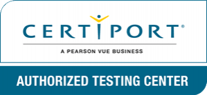

Participer
Récompenses
Dates limites
Promouvoir
Règles
FAQ
Financement
Contactez nous
Participer
Récompenses
Dates limites
Promouvoir
Règles
FAQ
Financement
Contactez nous
Bien que le laissez-passer du Championnat national et la nourriture soient gratuits pour tous les étudiants et un chaperon, l’hôtel et le voyage au championnat doivent être financés par les participants. En 2023, on estime que pour les vols (selon l’emplacement de l’étudiant) et les frais d’hôtel (165 $ par nuit), il pourrait en coûter environ 1 000 $ pour qu’un étudiant se rende au Championnat national. Cependant, Certiport a un guide pour aider les étudiants à financer leur voyage afin qu’ils puissent participer au championnat. Si un étudiant a passé son examen de qualification dans un établissement d’enseignement, il devrait travailler avec son éducation et les administrateurs pour obtenir des activités de collecte de fonds approuvés par leur association étudiante, ou tout autre groupe approprié.
De nombreux établissements d’enseignement disposent de fonds pour payer les frais de déplacement. Collaborer avec un éducateur pour communiquer avec les administrateurs afin de déterminer si un budget est alloué pour faciliter les déplacements.
Go Fund Me offre à divers donateurs la possibilité d’aider les étudiants à se rendre aux championnats nationaux. Les étudiants peuvent créer une collecte de fonds numérique qui peut facilement être partagée sur les médias sociaux et trouvée par les donateurs qui cherchent à soutenir leurs concurrents. Les étudiants devraient décrire ce qu’est le concours, pourquoi ils veulent y assister, et comment il fera une différence dans leur carrière académique et professionnelle.
Lors de la création d’une page Go Fund Me, assurez-vous d’avoir le nom complet de l’événement dans le titre (« Championnat National Microsoft Office Specialist » ou « Championnat National OpenCertif Adobe Certified Professional »), car cela aidera les donateurs à trouver plus facilement leur page.
Soyez créatif et impliquez la communauté ! Les élèves devraient choisir une activité de financement qui leur semble importante. Une fois qu’ils ont décidé quel genre de collecte de fonds, ils devraient en faire la publicité, afin que la communauté sache qu’elle peut se présenter et apporter son soutien. Ils peuvent faire de la publicité dans les médias sociaux, les journaux locaux, ou le bouche à oreille.
Votre partenaire officiel Certiport Pearsonvue en France
